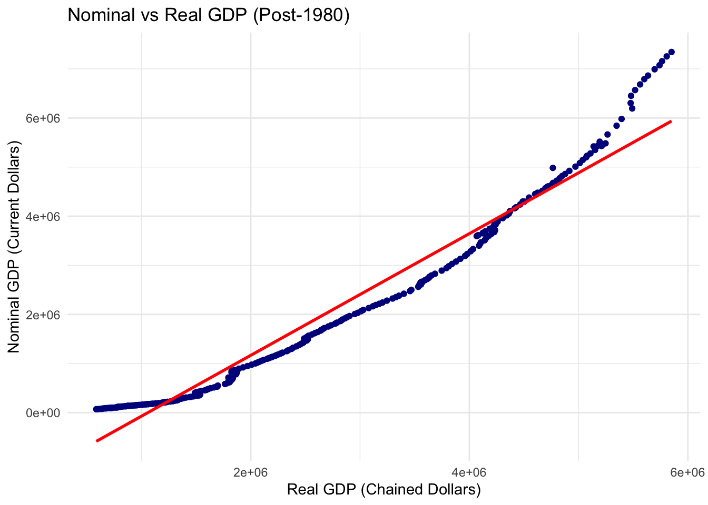
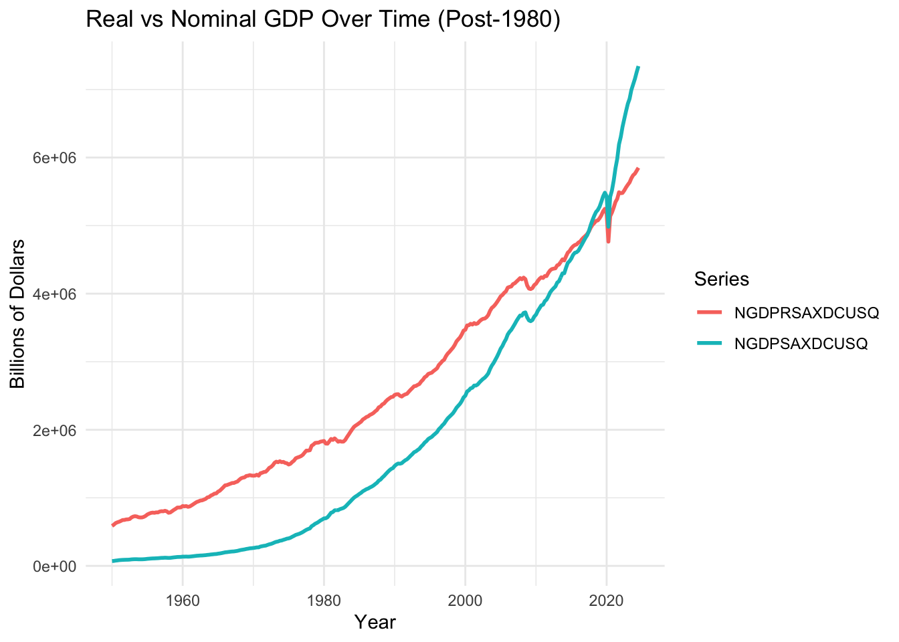
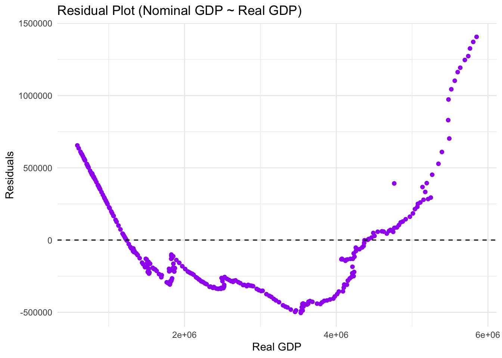

── Conflicts ────────────────────────────────────────── tidyverse_conflicts() ──
✖ dplyr::filter() masks stats::filter()
✖ dplyr::lag() masks stats::lag()
ℹ Use the conflicted package (<http://conflicted.r-lib.org/>) to force all conflicts to become errors
ggplot(FB, aes(x =!!sym(real), y =!!sym(nom))) +geom_point(color ="darkblue") +geom_smooth(method ="lm", se =FALSE, color ="red") +labs(title ="Nominal vs Real GDP (Post-1980)",x ="Real GDP (Chained Dollars)",y ="Nominal GDP (Current Dollars)" ) +theme_minimal()
`geom_smooth()` using formula = 'y ~ x'

The linear regression of nominal GDP on real GDP for the post-1980 period reveals a very strong and stable relationship between the two variables. The scatterplot, paired with the regression line, shows that higher real output is consistently associated with higher nominal output.
model <-lm(FB[[nom]] ~ FB[[real]])summary(model)
Call:
lm(formula = FB[[nom]] ~ FB[[real]])
Residuals:
Min 1Q Median 3Q Max
-503991 -285207 -129619 260511 1406250
Coefficients:
Estimate Std. Error t value Pr(>|t|)
(Intercept) -1.312e+06 4.432e+04 -29.60 <2e-16 ***
FB[[real]] 1.239e+00 1.469e-02 84.33 <2e-16 ***
---
Signif. codes: 0 '***' 0.001 '**' 0.01 '*' 0.05 '.' 0.1 ' ' 1
Residual standard error: 386200 on 297 degrees of freedom
Multiple R-squared: 0.9599, Adjusted R-squared: 0.9598
F-statistic: 7112 on 1 and 297 DF, p-value: < 2.2e-16
The regression results show a strong and significant relationship between real GDP and nominal GDP. The estimated slope coefficient of 1.239 indicates that nominal GDP increases about 24% faster than real GDP, showing the effect of inflation on nominal values. The intercept is negative, but it has no meaningful economic interpretation since real GDP cannot be zero.
The model explains about 96% of the variation in nominal GDP (R² = 0.9599), indicating an excellent fit. The residuals are small relative to the data, further supporting the strong linear relationship between the two GDP measures. Overall, the model captures both long-run economic growth and the persistent upward trend in the U.S. price level.
FB_long <- FB %>% tidyr::pivot_longer(cols =c(NGDPRSAXDCUSQ, NGDPSAXDCUSQ),names_to ="type",values_to ="value")ggplot(FB_long, aes(x = observation_date, y = value, color = type)) +geom_line(size =1) +labs(title ="Real vs Nominal GDP Over Time (Post-1980)",x ="Year",y ="Billions of Dollars",color ="Series" ) +theme_minimal()
Warning: Using `size` aesthetic for lines was deprecated in ggplot2 3.4.0.
ℹ Please use `linewidth` instead.

The time series graph further shows that while both real and nominal GDP trend upward, nominal GDP grows at a noticeably faster rate, causing the gap between the two series to widen. This gap represents the increasing price level in the U.S. economy.
residuals_FB <-data.frame(real_gdp = FB[[real]],residuals =residuals(model))ggplot(residuals_FB, aes(x = real_gdp, y = residuals)) +geom_point(color ="purple") +geom_hline(yintercept =0, linetype ="dashed") +labs(title ="Residual Plot (Nominal GDP ~ Real GDP)",x ="Real GDP",y ="Residuals" ) +theme_minimal()

The residual plot shows a U-shaped pattern that corresponds to different inflation regimes across decades. In the early 1980s, residuals are positive because high inflation caused nominal GDP to grow faster than the linear model predicts. From the mid 1980s through the early 2000s, residuals become negative, reflecting a long period of low and stable inflation in which nominal GDP grew more slowly than expected. Residuals remain slightly negative or near zero during the 2010s due to persistently low inflation. However, beginning around 2020, residuals rise sharply and turn positive again as inflation surged during the COVID period. These systematic period-based patterns indicate that the nominal–real GDP relationship changes across historical inflation periods.